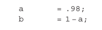

C Um Exemplo Comentado do Código Matlab
C.1 Introdução
Aqui nós fornecemos um exemplo comentado do código Matlab—usando as rotinas de inversão e plotagem padrão disponíveis no SPM12—necessárias para especificar e resolver um modelo generativo. Isso reproduz o exemplo de forrageamento T-maze no capítulo 7. Este apêndice, um pouco seco por si só, será mais útil para leitores que tentarem implementar este código no Matlab para que possam vê-lo funcionando. Recomendamos tentar “quebrar” esta demonstração jogando com diferentes valores de parâmetro e alterando o modelo generativo. Somente fazendo isso se desenvolverá um senso intuitivo da mecânica da Inferência Ativa.
C.2 Preliminares
Presumimos que os leitores tenham alguma familiaridade com o Matlab e tenham baixado com sucesso o pacote de software SPM12 de https://www.fil.ion .ucl.ac.uk/spm/. O primeiro passo é garantir que a pasta que contém as funções do SPM12 seja adicionada ao caminho do Matlab. Em seguida, abrimos um script Matlab e começamos a escrever nossa demonstração definindo uma função e dando-lhe um nome (aqui, demo_AI_book):
A segunda linha na figura C.1 configura o gerador de números aleatórios para uma semente inicial padrão para que os mesmos números aleatórios sejam gerados toda vez que a função for usada. Normalmente fazemos isso para demonstrações, pois isso garante a reprodutibilidade. No entanto, isso pode ser omitido se estivermos executando essa função várias vezes para calcular algumas estatísticas resumidas de comportamento em várias tentativas. É uma boa prática incluir alguns comentários aqui que informem as pessoas sobre o script. Dado que este apêndice é dedicado à comentários deste script, omitimos esta documentação aqui. Em seguida, definimos algumas das constantes importantes que usaremos mais tarde. A vantagem de listá-los juntos aqui é que é fácil encontrá-los, caso queiramos alterá-las mais tarde. Definimos dois parâmetros que desempenharão o papel de probabilidades, cujo papel ficará claro na seção C.3:

Esta definição garante \(a + b = 1\). Agora estamos prontos para configurar as matrizes e vetores \(A\), \(B\), \(C\) e \(D\) que definem um modelo generativo. Nesta simulação simples, assumimos que esses parâmetros são os mesmos no modelo generativo e no processo generativo.
C.3 A probabilidade
Nosso foco aqui é como formalizar uma matriz de verossimilhança no Matlab, então não vamos dedicar muito espaço para descrever o modelo generativo ou o paradigma que ele descreve.
(Esta descrição é dada na seção 7.2.) Nosso objetivo é traduzir as matrizes de verossimilhança das figuras 7.4 e 7.5 para uma linguagem que nossas rotinas de inversão entendam. Começamos com A1, que é escrito como A{1}, onde o termo entre colchetes { } corresponde ao sobrescrito (ou seja, modalidade de resultado); veja a figura C.3. Os elementos da matriz (ou tensor, mais tecnicamente) são endereçáveis usando três índices. Estes são o resultado, o primeiro estado oculto (localização) e o segundo estado oculto (contexto). Eles aparecem dentro de colchetes normais ( ). A matriz para o primeiro nível do segundo fator de estado oculto – o contexto no qual o estímulo atrativo está à direita – é então especificada com um índice 1 na terceira posição. O contexto em que está à esquerda é especificado com um índice 2 nesta posição: